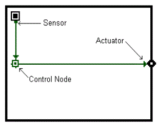
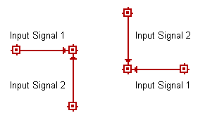

您可以使用先前在“ 使用 SketchPad 当您完成一组控制链接的绘制时，相应的图标将根据链接的起始位置和终止位置放置在 SketchPad 上。例如，如果您开始直接在房间图标上绘制控制链接，则传感器图标将放置在房间图标旁边，如果您终止气流路径上的控制链接，执行器图标将放置在气流路径图标旁边（参见下图）。

图 - 控制链接图标
如果终止空白单元格上的控制链接，则该单元格内将放置一个控制节点图标。如果没有中间控制节点图标，您不得在非控制节点图标（例如房间、流动路径或占用者）上发起和终止链接（参见下图）。这是因为要求从执行器到非控制节点图标的输入必须是范围从 0.0 到 1.0 的乘数形式。
图 – 无效的控制链接
控制节点图标最多可以有四个进出它们的链接，具体取决于您定义的控制节点的类型。如果尚未定义控制节点图标，ContamW 将只允许您在节点中绘制最多两个输入（一个垂直和一个水平），以及从节点绘制最多四个出口。但是，如果已经定义了控制节点图标，则 ContamW 将只允许根据控制节点图标将正确的链接集定义到图标中。 控制元件类型 （参见 控制元件类型 ）的控制节点。这是由于控制节点的输入信号约定区分了某些元素类型的两个不同输入信号，例如限制控制，或建立非交换数学运算的运算符顺序，例如减法和除法。如下图所示， 输入信号1 从左或右进入并且 输入信号2 从节点的顶部或底部进入。在具体元件的描述中需要时，为每种元件类型提供了有关输入信号的详细信息。

图 – 控制节点输入信号约定